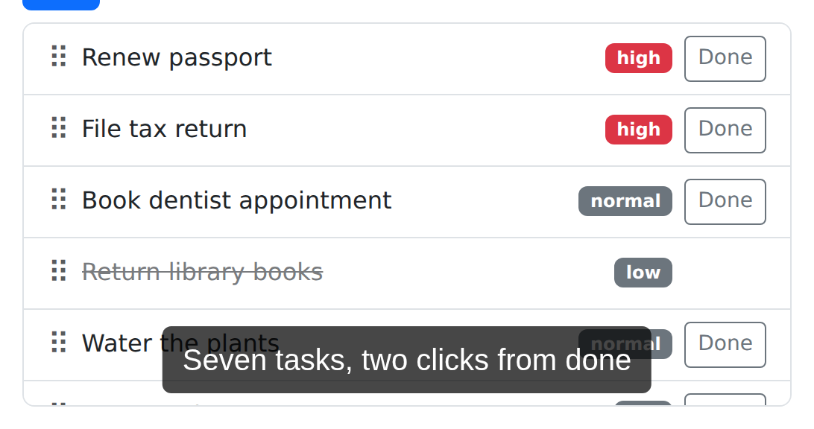

In this article, we’ll draw every kind of annotation paparazzi offers on the task tracker bundled with paparazzi: marks, callouts, spotlights, redactions, and captions. Along the way, we’ll style them, fit them into framed stills, and animate them in a recording, so you can choose the right annotation for each screenshot or video.
Annotations draw attention to parts of a page: an outline around a field, a callout explaining a button, a cover over something private. paparazzi draws most annotations into the page itself, attached to an element. That’s how they follow their elements as the page scrolls or changes layout, and why they show up in screenshots as well as recordings.
Annotations stay on the page until you clear them, and they belong to the current document, so paparazzi removes them when the page navigates away. Captions are the exception: paparazzi adds them to each screenshot and recording instead of drawing them into the page, so they stay through navigation, as Captions explains.
If you’re new to paparazzi, read the Get started article first: it introduces selectors, location specs, and scopes, which annotations use to pick their elements. Afterward, the in-depth app walkthrough combines annotations in a longer recording. You’ll need a Chromium-based browser, and the recordings at the end need the av package to encode MP4 files.
pz_open() starts a headless browser and opens the page,
and pz_example() returns the path to the task tracker that
comes with paparazzi:
library(paparazzi)
page <- pz_open(
pz_example("tasks"),
width = 720,
height = 800,
color_scheme = "light"
)Marks
pz_annotate() takes a target selector, location spec, or list of targets
and draws an annotation mark on every matching element. With no target,
it marks the current scope – the element that pz_find()
narrowed the chain to – or the page body.
You choose one of four marks with the type argument:
-
"box"(the default) outlines the element. -
"circle"draws an ellipse around it, with room for elements that aren’t rectangular. -
"underline"strokes along the element’s bottom edge. -
"highlight"lays a translucent fill over the element, blended with the page.
Let’s draw one of each, with a label naming its
type:
page |>
pz_annotate("#task-title", type = "box", label = "box") |>
pz_annotate("#add-task", type = "circle", label = "circle") |>
pz_annotate(
pz_loc(".task", has_text = "File tax return"),
type = "underline",
label = "underline"
) |>
pz_annotate(
pz_loc(".task", has_text = "Water the plants"),
type = "highlight",
label = "highlight"
)
page |> pz_screenshot(frame = pz_frame("main", pad = 16))
Each screenshot in this article passes a pz_frame(), so
paparazzi crops the still to the part of the page we’re discussing.
Marks stay on the page after paparazzi draws them, so we’ll clear them
before each new example:
page |> pz_annotate_clear()paparazzi only draws a mark where its target can be seen. When a task row scrolls out of view inside the scrolling task list, paparazzi cuts its mark off at the list’s edge instead of drawing it over whatever sits below the list. On the sides where the target isn’t cut off, the outline keeps its padding, even past the list’s edge. paparazzi hides the mark, and its badge, when the target is scrolled entirely out of the list, hidden, or removed from the page.
Label badges
label adds a small badge to each mark.
label = TRUE numbers the matches in document order, which
helps when your text refers to “item 3”:
page |> pz_annotate(".filters a", label = TRUE)
page |>
pz_screenshot(
frame = pz_frame(".filters", pad = 16, target_box = "annotated")
)
The badges sit outside the filter links, so this frame uses
target_box = "annotated" to fit the links together with
their marks and badges. Framing stills
shows the difference.
A single string or number repeats on every match instead, so
label = "A" or label = 1 puts the same badge
on each element the target matches.
Padding, color, and fonts
pad grows the mark beyond the element’s box, with one
number for all sides or c(top, right, bottom, left).
color sets the outline and badge to any CSS color, and
stroke_width sets the outline’s thickness in CSS pixels.
font_family and font_size style the badge
text.
paparazzi fills each badge with the mark’s color and writes its text
in white; label_fill and label_text_color
change that for one call. When you leave out the color, stroke width, or
fonts, paparazzi uses the page’s defaults, which you can change with
pz_stage_annotate(), as Styling
defaults explains.
Here, an amber highlight covers the title field, and a blue box with a monospace badge fits snugly around the Add button:
page |>
pz_annotate("#task-title", type = "highlight", pad = 6, color = "#f59e0b") |>
pz_annotate(
"#add-task",
label = "#add-task",
pad = c(2, 6, 2, 6),
color = "#2563eb",
font_family = "monospace",
font_size = 16
) |>
pz_screenshot(
frame = pz_frame("#new-task", pad = 24, target_box = "annotated")
)
Callouts
pz_annotate_callout() draws a bubble of text next to
each matching element, repeating the same text for every
match. side picks where the bubble goes: a side
("top", "right", "bottom",
"left") or a corner like "top right". When you
leave side out, paparazzi picks the side with the most
room.
paparazzi keeps every bubble inside the viewport, even if that moves
it off the side you asked for, and it never cuts a bubble off. A leader
line runs from the bubble to the element, with an arrow at the element’s
end. leader = FALSE drops the line for a tooltip-style
bubble, and label adds a badge, just as it does for
marks.
page |>
pz_annotate_callout(
"Name the task",
target = "#task-title",
side = "top",
label = 1
) |>
pz_annotate_callout(
"Priority is optional",
target = "#task-priority",
side = "bottom",
leader = FALSE
) |>
pz_screenshot(
frame = pz_frame("#new-task", pad = 12, target_box = "annotated")
)
Like a mark, a callout hides while its target is hidden or scrolled out of view inside a scrolling container. When only part of the target is in view, the leader points at that part.
Leaders and bubble colors
leader also takes a decoration for each end of the line.
start is the bubble’s end and end is the
element’s end, and each can be "none",
"arrow", "dot", or "bar". An end
you leave out gets "none". distance sets the
gap between the bubble and the element in CSS pixels: 24 by default, or
8 for a bubble without a line. stroke_width sets the line’s
thickness, and paparazzi sizes the decorations to match.
paparazzi draws dark bubbles with white text unless you choose other
colors. fill and text_color change the
bubble’s background and text, while color still sets its
border and the line. Here, a long line with a dot at the bubble leads
from a pale yellow bubble to the Add button:
page |>
pz_annotate_callout(
"Add it to the list",
target = "#add-task",
side = "bottom",
leader = c(start = "dot", end = "arrow"),
distance = 40,
fill = "#fef3c7",
text_color = "#171717"
) |>
pz_screenshot(
frame = pz_frame("#new-task", pad = 12, target_box = "annotated")
)
Spotlight
pz_annotate_spotlight() dims the whole page except for a
rounded cutout around each target, so the viewer’s eye goes straight to
what matters. dim sets how dark the page gets, from 0 (no
dimming) to 1 (black), and defaults to 0.6. pad grows the
cutouts, and a list of targets gets one cutout each:
page |>
pz_annotate_spotlight(
list("#task-title", "#add-task"),
pad = 8,
dim = 0.75
) |>
pz_screenshot(frame = pz_frame("main", pad = 24))
paparazzi only opens a cutout over the part of a target that’s in view, so a target scrolled out of a scrolling container gets no cutout.
A page has one spotlight at a time: drawing a new spotlight replaces
the old one. paparazzi gives the spotlight the reserved id
"spotlight", so you can clear it alone without clearing
other annotations:
page |> pz_annotate_clear(id = "spotlight")Redaction
pz_annotate_redact() covers elements so their contents
stay out of the screenshot or recording. We’ll treat the titles of the
high-priority tasks as private. With method = "fill", the
default, paparazzi paints an opaque cover, near-black unless you pass a
color:
private <- '[data-priority="high"] .task-title'
page |>
pz_annotate_redact(private, method = "fill") |>
pz_screenshot(
frame = pz_frame(private, pad = 24, target_box = "annotated")
)
With method = "blur", paparazzi blurs what’s underneath
instead:
page |>
pz_annotate_redact(private, method = "blur") |>
pz_screenshot(
frame = pz_frame(private, pad = 24, target_box = "annotated")
)
Use fill for real secrets. Blur can leave short text partly legible, while a fill stays opaque even if you give it a translucent color.
A redaction covers each element’s border box plus pad,
but not content that overflows the element, so redact the element that
actually overflows or add padding. Like marks, redactions stop at the
edges of scrolling containers and hide while their target is hidden or
removed.
paparazzi draws redactions instantly, even during a recording, but a frame captured before the redaction can already show the text. Add redactions before you start a recording, or while it’s paused, as the in-depth app walkthrough does.
Captions
pz_annotate_caption() adds a caption to the screen
instead of to an element: a dark panel along the bottom edge of the
capture, or the top edge with side = "top". paparazzi adds
the caption to each still and recording itself instead of drawing it
into the page, so the caption stays through navigation and across
recordings. It keeps any newlines in its text.
page |> pz_annotate_caption("Seven tasks, two clicks from done")
page |> pz_screenshot()
paparazzi adds the caption after it crops a still to its frame, so the caption runs along the edge of a framed still, too:
page |> pz_screenshot(frame = pz_frame(".task-list", pad = 16))
paparazzi shows one caption at a time. Each call to
pz_annotate_caption() replaces the caption on screen, which
makes it easy to give each step of a recording its own caption. The
caption’s reserved id is "caption":
page |> pz_annotate_clear(id = "caption")Clearing and replacing
pz_annotate_clear() removes one annotation by
id, or every annotation when you leave id out.
Besides the reserved "spotlight" and
"caption", you can give your own marks, callouts, and
redactions any nonempty id. Each call to an annotation function with an
id you’ve used before replaces that annotation instead of adding a
second one:
page |>
pz_annotate("#task-title", id = "mark") |>
pz_annotate("#add-task", type = "circle", id = "mark") |>
pz_screenshot(frame = pz_frame("#new-task", pad = 16))
The second id = "mark" call replaced the box around the
title field, so only the circle remains.
Styling defaults
pz_stage_annotate() sets your annotation styles once for
every later annotation on the page. It sets the color, stroke width,
font family, and badge size for every annotation, the bubble colors and
distance for callouts, and the side for captions. Arguments to
individual annotation functions override these defaults for that
call.
Let’s make later annotations blue, with large monospace badges:
page |>
pz_stage_annotate(
color = "#2563eb",
font_family = "monospace",
font_size = 24
) |>
pz_annotate("#add-task", label = "A") |>
pz_screenshot(
frame = pz_frame("#new-task", pad = 8, target_box = "annotated")
)
Staged styles stay on the page until you change them. Passing
NULL restores a default: crimson (#e11d48)
marks with 3 pixel lines, sans-serif badges with 14 pixel text, callouts
with white text on #171717, 24 pixels from their element (8
without a line), and captions at the bottom. We’ll clear the box and
restore the defaults:
page |> pz_annotate_clear()
page |>
pz_stage_annotate(
color = NULL,
font_family = NULL,
font_size = NULL
)The staged fill and text_color style
callout bubbles only. Mark badges follow their mark’s color unless you
pass label_fill or label_text_color.
Web fonts
A font_family string names a font that Chrome can
already find, like a generic family such as "monospace" or
a font installed on the machine running Chrome. To use a web font, you
first load it into the page with pz_stage_fonts(). You
describe the font with pz_font_google(),
pz_font_bunny(), or, for a font file on disk,
pz_font_file(). pz_stage_fonts() waits until
the font has loaded, so paparazzi never draws an annotation in a
fallback font while the font downloads.
A handwritten font makes a callout look like a note written over the screenshot. We’ll stage Patrick Hand from Google Fonts and make it the default for later annotations:
hand <- pz_font_google("Patrick Hand")
page |>
pz_stage_fonts(hand) |>
pz_stage_annotate(font_family = hand, font_size = 18) |>
pz_annotate_callout(
"Optional: attach a file",
target = "#attachment",
side = "bottom"
) |>
pz_screenshot(
frame = pz_frame("#new-task", pad = 8, target_box = "annotated")
)
You can pass the font object anywhere font_family takes
a string, as long as you’ve staged it on the page. It stands for the CSS
font family '"Patrick Hand", sans-serif', so the browser
falls back to sans-serif for characters the font lacks. Captions and
keystroke callouts use the staged font_family too, and
staged fonts stay with the page when it navigates to a new document.
Chrome downloads Google and Bunny fonts, so staging them needs a
network connection. pz_font_file() reads the font file in
R, so it works offline.
page |>
pz_annotate_clear() |>
pz_stage_annotate(font_family = NULL, font_size = NULL)Framing stills
paparazzi measures a still’s frame from the elements its target
matches. Badges and callouts sit outside those elements, so
with the default target_box = "element", the frame can crop
them off. With target_box = "annotated", paparazzi measures
the elements together with their marks, callouts, and spotlight cutouts.
Here’s the difference on a callout beside the Done filter:
done <- ".filters a[href='#done']"
page |> pz_annotate_callout("Finished tasks", target = done, side = "right")
page |> pz_screenshot(frame = pz_frame(done, pad = 24))
page |>
pz_screenshot(
frame = pz_frame(done, pad = 24, target_box = "annotated")
)
target_box = "annotated" never includes redactions or
annotations on other elements. It only applies to stills: paparazzi
always measures a recording’s frame from the element box.
Reveals
So far, every annotation has appeared fully drawn. During a recording, paparazzi animates each annotation as it appears, and calls this animation a reveal. When you clear an annotation during a recording, paparazzi plays its reveal in reverse. Outside a recording, or while it’s paused, paparazzi draws and clears annotations instantly.
reveal chooses the animation: "fade",
"draw" (the outline draws itself), "pop",
"slide", "wipe" (sweeps clockwise from 12
o’clock), or "none". Boxes fade in by default, the other
marks draw themselves, callouts pop in, and spotlights fade in. This
recording shows a box fading in, a circle drawing itself, and a callout
popping in, then all three reversing out:
page |>
pz_record_start(
frame = pz_frame("#new-task", pad = 40, when = "start"),
scale = 0.6,
hold = c(0.3, 0.5)
) |>
pz_annotate("#task-title", type = "box") |>
pz_record_hold(0.4) |>
pz_annotate("#task-priority", type = "circle") |>
pz_record_hold(0.4) |>
pz_annotate_callout(
"Then press Add",
target = "#add-task",
side = "bottom"
) |>
pz_record_hold(1) |>
pz_annotate_clear()The recording chain ends the chunk, so paparazzi stops the recording
and adds it to the article as an MP4. In a script, give
pz_record_start() a path to choose the file.
Keystroke callouts
pz_act_press() can show the keys it presses as keycaps,
a callout that paparazzi draws only in recordings. Set show_keys to
choose how the keycaps look: "words" spells out modifier
names, "mac" uses Mac symbols, and "both"
shows Mod as Ctrl / ⌘. The default is
"none", and pz_stage(show_keys = ...)
changes it for every later key press on the page.
The task tracker adds a task when you press Enter in the title field, so we’ll show Enter with Mac symbols:
page |>
pz_record_start(
frame = pz_frame("#new-task", pad = 24, when = "start"),
scale = 0.6
) |>
pz_act_type("Water the dog", target = "#task-title") |>
pz_act_press("Enter", show_keys = "mac") |>
pz_expect_text(
"Water the dog",
target = pz_loc(".task-title", which = "first")
)paparazzi shows one keystroke callout at a time, so each
pz_act_press() call replaces the previous one. Keystroke
callouts never appear in stills.
We’re done with the browser, so let’s close it:
pz_close(page)The function reference lists every annotation function with all of its arguments.